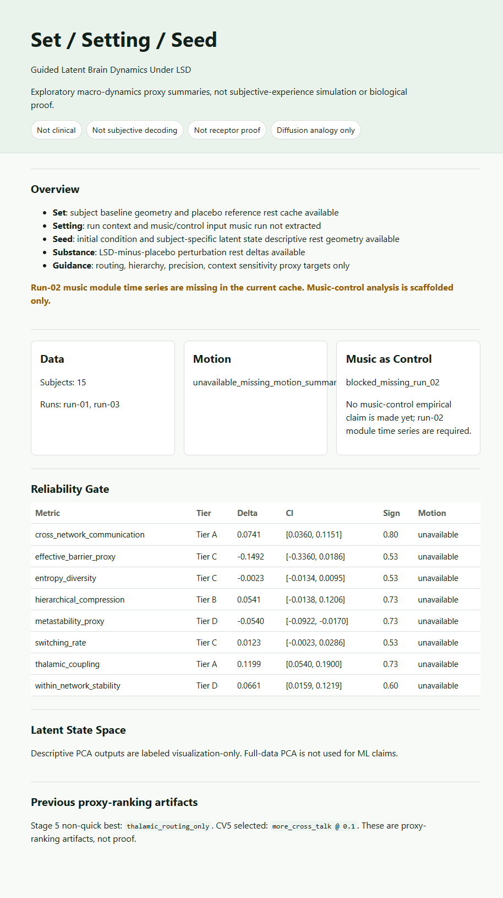

Interpretation
C is the strongest current macro-dynamic proxy layer. E is useful as a lower transition/control-energy proxy, not receptor-specific proof. B remains a negative DMDc sanity baseline.
Offline review package
Exact values, screenshots, figures, caveats, and local CSV previews copied from the existing package.
C is the strongest current macro-dynamic proxy layer. E is useful as a lower transition/control-energy proxy, not receptor-specific proof. B remains a negative DMDc sanity baseline.
Internal robustness does not close the FD/DVARS/censoring motion-proof blocker and does not promote biological-ground-truth claims.
Screenshots

Project posture and gate summary.

A-E ranking sorted by support score.

Bootstrap and sensitivity summary.

Cached paired LSD/placebo summaries.

Context and claim-boundary labels.

Review figure registry with blocked gates visible.
Figures

Entropy 0.989019 to 0.997577; switching rate 0.147147 to 0.203203.

Objective 1628.945399 to 2.053957; selected iteration 42; empirical run count 60.

Representative review surface copied for offline inspection.
Representative project figure copied for offline inspection.
CSV previews
Some source table labels are terse; read them with the safe framing above. Full files are in assets/data/.
| source_path | derivation_note | rank | layer | mechanism | status | score | evidence |
|---|---|---|---|---|---|---|---|
| results/dynamic_mechanism_ranking/summary.json | derived for PI package from existing artifacts; not regenerated scientific output | 1 | C | hierarchy_routing_layer | implemented_first_pass | 0.3326057058836129 | sensory-transmodal, associative, thalamic-gateway, and hierarchy-flattening FC proxies |
| results/dynamic_mechanism_ranking/summary.json | derived for PI package from existing artifacts; not regenerated scientific output | 2 | E | receptor_informed_network_control_energy | implemented_proxy_control_energy | 0.18287468591669281 | finite-horizon control energy with receptor, hierarchy, transmodal, random, and degree-control profiles |
| results/dynamic_mechanism_ranking/summary.json | derived for PI package from existing artifacts; not regenerated scientific output | 3 | D | dynamic_repertoire_layer | implemented_first_pass | 0.1506187252761158 | integration, segregation, graph modularity, participation, dynamic-FC variance, and trajectory-step proxies |
| results/dynamic_mechanism_ranking/summary.json | derived for PI package from existing artifacts; not regenerated scientific output | 4 | A | transition_state_proxy | implemented_first_pass | 0.1489060941111875 | state occupancy, transition entropy, transition rate, dwell/barrier, and step-distance proxies |
| results/dynamic_mechanism_ranking/summary.json | derived for PI package from existing artifacts; not regenerated scientific output | 5 | B | dmdc_condition_interaction | implemented_negative_control_baseline | -0.07406369817533776 | leave-one-subject-out one-step RMSE change; retained as a predictive baseline, not control-energy evidence |
| source_path | derivation_note | layer | current_score | score_mean | score_std | score_ci_low | score_ci_high | median_rank | rank_1_fraction |
|---|---|---|---|---|---|---|---|---|---|
| results/dynamic_mechanism_ranking/robustness/bootstrap_layer_summary.csv | derived for PI package from existing artifacts; not regenerated scientific output | A | 0.1489060941111875 | 0.16374822825819282 | 0.15918402837145842 | -0.13152588454462086 | 0.49367581112711 | 3.0 | 0.1171875 |
| results/dynamic_mechanism_ranking/robustness/bootstrap_layer_summary.csv | derived for PI package from existing artifacts; not regenerated scientific output | B | -0.07406369817533776 | -0.07443033378435902 | 0.046831326262729095 | -0.1659816812218171 | 0.012140522869701333 | 5.0 | 0.0 |
| results/dynamic_mechanism_ranking/robustness/bootstrap_layer_summary.csv | derived for PI package from existing artifacts; not regenerated scientific output | C | 0.3326057058836129 | 0.34947728175334536 | 0.07872929670226239 | 0.22218804445372778 | 0.5203150526256408 | 1.0 | 0.84375 |
| results/dynamic_mechanism_ranking/robustness/bootstrap_layer_summary.csv | derived for PI package from existing artifacts; not regenerated scientific output | D | 0.1506187252761158 | 0.14838410090054516 | 0.09045343941388309 | -0.019301780038447847 | 0.32966509705469904 | 3.0 | 0.01953125 |
| results/dynamic_mechanism_ranking/robustness/bootstrap_layer_summary.csv | derived for PI package from existing artifacts; not regenerated scientific output | E | 0.18287468591669281 | 0.1956333492584395 | 0.11130764090972128 | -0.016249793837194104 | 0.3927837014442264 | 3.0 | 0.01953125 |
| source_path | derivation_note | layer | run | support_score | metric_count |
|---|---|---|---|---|---|
| results/dynamic_mechanism_ranking/robustness/run_sensitivity.csv | derived for PI package from existing artifacts; not regenerated scientific output | A | run-01 | 0.2271686003527546 | 6 |
| results/dynamic_mechanism_ranking/robustness/run_sensitivity.csv | derived for PI package from existing artifacts; not regenerated scientific output | A | run-03 | 0.07054756283392125 | 6 |
| results/dynamic_mechanism_ranking/robustness/run_sensitivity.csv | derived for PI package from existing artifacts; not regenerated scientific output | C | run-01 | 0.326055737941365 | 12 |
| results/dynamic_mechanism_ranking/robustness/run_sensitivity.csv | derived for PI package from existing artifacts; not regenerated scientific output | C | run-03 | 0.3298955732881808 | 12 |
| results/dynamic_mechanism_ranking/robustness/run_sensitivity.csv | derived for PI package from existing artifacts; not regenerated scientific output | D | run-01 | 0.17317641046456464 | 11 |
| results/dynamic_mechanism_ranking/robustness/run_sensitivity.csv | derived for PI package from existing artifacts; not regenerated scientific output | D | run-03 | 0.13201883644999216 | 11 |
| results/dynamic_mechanism_ranking/robustness/run_sensitivity.csv | derived for PI package from existing artifacts; not regenerated scientific output | E | run-01 | 0.3662348518000468 | 7 |
| results/dynamic_mechanism_ranking/robustness/run_sensitivity.csv | derived for PI package from existing artifacts; not regenerated scientific output | E | run-03 | 0.027963793889125253 | 7 |
| source_path | derivation_note | metric | lsd_minus_placebo_delta | delta_std | paired_subject_count | runs |
|---|---|---|---|---|---|---|
| results/stage_2/empirical_viewer/group_overview.json | derived for PI package from existing artifacts; not regenerated scientific output | within_network_stability | 0.06609328671299261 | 0.10813802071707895 | 15 | run-01;run-03 |
| results/stage_2/empirical_viewer/group_overview.json | derived for PI package from existing artifacts; not regenerated scientific output | cross_network_communication | 0.07407619939923198 | 0.08352960021297152 | 15 | run-01;run-03 |
| results/stage_2/empirical_viewer/group_overview.json | derived for PI package from existing artifacts; not regenerated scientific output | thalamic_coupling | 0.11991820431751381 | 0.14835689674507946 | 15 | run-01;run-03 |
| results/stage_2/empirical_viewer/group_overview.json | derived for PI package from existing artifacts; not regenerated scientific output | hierarchical_compression | 0.054149688768586765 | 0.13692444159838932 | 15 | run-01;run-03 |
| results/stage_2/empirical_viewer/group_overview.json | derived for PI package from existing artifacts; not regenerated scientific output | entropy_diversity | -0.0022526077494528915 | 0.02304580249333637 | 15 | run-01;run-03 |
| results/stage_2/empirical_viewer/group_overview.json | derived for PI package from existing artifacts; not regenerated scientific output | switching_rate | 0.012345679012345678 | 0.03233252244983632 | 15 | run-01;run-03 |
| results/stage_2/empirical_viewer/group_overview.json | derived for PI package from existing artifacts; not regenerated scientific output | metastability_proxy | -0.053960353741377386 | 0.0792218569817414 | 15 | run-01;run-03 |
| results/stage_2/empirical_viewer/group_overview.json | derived for PI package from existing artifacts; not regenerated scientific output | effective_barrier_proxy | -0.1491923940892797 | 0.36637402473227426 | 15 | run-01;run-03 |
| source_path | derivation_note | claim | verdict | evidence | next_action |
|---|---|---|---|---|---|
| results/dynamic_mechanism_ranking/robustness/claim_verdicts.csv | derived for PI package from existing artifacts; not regenerated scientific output | C hierarchy/routing is currently the strongest implemented macro-dynamic proxy layer. | supported_first_pass | Bootstrap rank-1 fraction=0.844. | Re-run C under Schaefer/Yeo and motion-sensitive exclusions before final thesis claims. |
| results/dynamic_mechanism_ranking/robustness/claim_verdicts.csv | derived for PI package from existing artifacts; not regenerated scientific output | E supports a landscape-flattening proxy. | supported_proxy | Default-horizon receptor transition-energy reduction=4.702%. | Replace macro graph with structural connectome and add graph-rewire nulls. |
| results/dynamic_mechanism_ranking/robustness/claim_verdicts.csv | derived for PI package from existing artifacts; not regenerated scientific output | E supports receptor-specific control placement. | not_supported_yet | Receptor-vs-random energy reduction=-15.434%. | Replace coarse priors with PET 5-HT2A maps and spatial nulls before making receptor claims. |
| results/dynamic_mechanism_ranking/robustness/claim_verdicts.csv | derived for PI package from existing artifacts; not regenerated scientific output | Current LSD patterns align with the 2026 transmodal-unimodal benchmark. | directionally_aligned | C sensory-transmodal mean delta=0.0473. | Test the same benchmark in ds006072 and Schaefer/Yeo parcellations. |
| results/dynamic_mechanism_ranking/robustness/claim_verdicts.csv | derived for PI package from existing artifacts; not regenerated scientific output | Current LSD patterns address striatal/unimodal effects. | not_testable_current_proxy | not_available_current_8_module_proxy | Add striatal parcels before comparing this part of the Nature Medicine result. |
| results/dynamic_mechanism_ranking/robustness/claim_verdicts.csv | derived for PI package from existing artifacts; not regenerated scientific output | B DMDc is the main control-theory result. | reject_as_main_claim | B bootstrap rank-1 fraction=0.000. | Keep B as a negative/sanity baseline unless held-out prediction improves clearly. |
| source_path | derivation_note | label | status | ready | score | evidence | blocker_or_note |
|---|---|---|---|---|---|---|---|
| results/thesis_upgrade/thesis_upgrade_status.json | derived for PI package from existing artifacts; not regenerated scientific output | Motion and confounds | implemented_image_derived_motion_qc_control | False | 0.82 | results/setting_seed/motion/motion_summary.json; results/confound_controls/motion_confound_control_status.json; results/confound_controls/design_confound_control_status.json; results/confound_controls/module_dvars_control_status.json; results/confound_controls/published_motion_qc_status.json; results/confound_controls/ds003059_motion_source_availability.json; results/confound_controls/image_motion_qc_status.json; results/confound_controls/fmriprep_motion_proof_plan.json | Raw-BOLD image-derived motion/QC sensitivity is implemented; fMRIPrep FD/DVARS/censoring remains the preferred future gold-standard control. |
| results/thesis_upgrade/thesis_upgrade_status.json | derived for PI package from existing artifacts; not regenerated scientific output | Canonical parcellation | implemented_mechanism_ranking | True | 1.0 | results/parcellation_sensitivity/parcellation_sensitivity_status.json | Canonical Schaefer/Yeo extraction, empirical viewer, and mechanism ranking are available. |
| results/thesis_upgrade/thesis_upgrade_status.json | derived for PI package from existing artifacts; not regenerated scientific output | Neuromaps spatial nulls | implemented_schaefer100_full_map_family_moran_spatial_nulls | True | 1.0 | results/cortical_maps/neuromaps_spatial_null_status.json; results/cortical_maps/cortical_map_alignment_status.json | Schaefer100 map-family Moran spatial nulls are complete across receptor, myelin, functional-gradient, and gene-expression priors. |
| results/thesis_upgrade/thesis_upgrade_status.json | derived for PI package from existing artifacts; not regenerated scientific output | ROCKET benchmark | supporting_internal_signal | False | 0.85 | results/training/rocket_condition_benchmark/comparison_summary.json | Add permutation-null, calibration, and MiniRocket/MultiRocket gates before treating this as strong ML evidence. |
| results/thesis_upgrade/thesis_upgrade_status.json | derived for PI package from existing artifacts; not regenerated scientific output | Public dashboard | static_snapshot_ready | True | 1.0 | results/thesis_upgrade/thesis_upgrade_status.json; _site/pages_manifest.json; _site/index.html; _site/dashboard/dashboard-data.json; _site/artifacts/results/thesis_upgrade/thesis_upgrade_status.json; _site/artifacts/results/reproducible_archive/ARCHIVE_MANIFEST.json | Static GitHub Pages dashboard snapshot and key gate/archive artifacts are present and synchronized with the current readiness artifact. This is presentation evidence, not a citable archive. |
| results/thesis_upgrade/thesis_upgrade_status.json | derived for PI package from existing artifacts; not regenerated scientific output | External validation implementation/readiness | implemented_ds006072_unchanged_scoring_validation | True | 1.0 | results/psilocybin_ds006072/psilocybin_ds006072_status.json; results/psilocybin_ds006072/external_validation_readiness.json; results/psilocybin_ds006072/comparable_empirical_validation_summary.json; results/psilocybin_ds006072/minimum_payload_plan.json; results/psilocybin_ds006072/cifti_empirical_extraction_status.json; results/external_ingestion/external_ingestion_status.json | Schaefer100/Yeo7 ds006072 extraction and unchanged scoring are complete; ranking_differs_from_lsd_top_layer; ds006072 top=E, LSD reference top=C. |
| results/thesis_upgrade/thesis_upgrade_status.json | derived for PI package from existing artifacts; not regenerated scientific output | Receptor + structural sensitivity implementation | fully_integrated | True | 1.0 | results/structural_connectome/structural_connectome_status.json; results/receptor_priors/receptor_prior_status.json; results/external_ingestion/external_ingestion_status.json | Documented structural-connectome graph sensitivity and PET-derived receptor-prior sensitivity are implemented with null/control context; keep biological mechanism promotion governed by the separate receptor/myelin/gradient claim gate. |
| results/thesis_upgrade/thesis_upgrade_status.json | derived for PI package from existing artifacts; not regenerated scientific output | Receptor/myelin/gradient claim | resolved_negative_not_promoted | True | 1.0 | results/cortical_maps/cortical_map_alignment_status.json; results/cortical_maps/map_prior_falsification_status.json | The map-prior claim is resolved as a negative control: do not promote receptor/myelin/gradient mechanism claims from this dataset. |
| results/thesis_upgrade/thesis_upgrade_status.json | derived for PI package from existing artifacts; not regenerated scientific output | Reproducible archive | manifest_ready_doi_missing | False | 0.55 | results/reproducible_archive/ARCHIVE_MANIFEST.json | Checksum manifest exists, but thesis-readiness still requires verified Zenodo DOI. |
{kind=link}
{kind=link}